Single scattering properties of randomly oriented hydrometeors (ADDA → ARTS SSDB)
Version: 2026-11-06 · repo state: Phase 5 complete, ARO/TRO backlog ready for production runs
This is the single reference document for maintaining and operating the DDA automation pipeline in this repository. It is written for the future project maintainer: enough physics theory to understand what is computed and why each knob matters, and enough operational detail (verified against the actual source, not from memory) to run, extend and debug the pipeline safely.
docs/DDA-manual.html).make_figures.py: mamba activate DDA && python docs/make_figures.py
→ docs/figures/*.png. If you change the backlog or run new benchmarks, re-run it and
commit the figures.python docs/build_html.py
(add --pdf if a headless Chrome/Chromium is installed). Mermaid diagrams in the
HTML render via mermaid.js from a CDN — same requirement as GitHub.| Part | Content |
|---|---|
| 0 | What the project computes, where things live, glossary |
| 1 | DDA, shape model & resolution scheme, ice dielectric, Mueller matrices, orientation averaging (ARO/TRO), spherical harmonics, mirror symmetry, SSDB format |
| 2 | Call graphs (ARO/TRO), artifact data flow, module status table |
| 3 | Config contract + annotated walkthrough, job flowcharts, local & HPC runbooks, idempotency, env overrides |
| 4 | Golden baselines, noise-based gates, equivalence suites, backlog status |
| A … C | ADDA CLI tables, input .dat files, NetCDF layout |
| D | Catalogue of traps, with bug-fix history |

The pipeline answers one question: for a given particle habit, size, frequency and temperature, what are its single-scattering properties averaged over all relevant particle orientations? Two orientation strategies are produced:
| Strategy | Physical situation | Orientation space covered | Output coordinates |
|---|---|---|---|
| ARO — azimuthally random oriented | cloud particle whose symmetry/maximum axis stays horizontal (gravity), azimuth fully random | Euler-\(\beta\) tilt grid \(\times\) incidence-angle grid (5$\times \(10 solved, re-gridded to 19\)\times $19 in output) | one NetCDF per ( \(\beta\), size, f, T) |
| TRO — totally random oriented | freely tumbling particle | full Euler space ( \(\alpha\), \(\beta\), \(\gamma\)) — integrated away | orientation-independent cross sections + Mueller |
DDA/
├── adda_python_scripts/ ← THE PIPELINE (orchestration, post-processing, export)
│ ├── adda_config_*.py one config per habit (ALL knobs live here)
│ ├── adda_main_control.py ARO entry point (T×f×size loop, job submission)
│ ├── adda_sub_control_spharmonics.py one ARO job: icosphere orientation loop + ADDA
│ ├── adda_main_control_rndorient.py TRO entry point (chunked job-table)
│ ├── adda_sub_control_randomorient.py one TRO job: ADDA '-orient avg'
│ ├── adda_process_aro_particles*.py post-processing (averaging, re-expansion)
│ ├── adda2SSDBnetcdf_functions.py SSDB export writer
│ ├── definitions_for_netcdf.py SSDB variable/dimension definitions
│ ├── adda_control_functions.py (acf) ADDA CLI wrapper, dielectric, mirror transforms
│ ├── adda_orientational_avg_spharmonics_functions.py (aoa) ARO orientation averaging
│ ├── spherical_harmonics_for_adda.py (spha) shtns SH expansion machinery
│ ├── icosphere_grid.py (ico) orientation-sampling grids
│ └── old_configs/, *_for_testing.py, adda_sub_control_gridref.py ← ARCHIVE, do not extend
├── adda/ ADDA 1.5.0-alpha3 source (built locally: adda/src/seq/adda)
├── adda_1.4/ ADDA 1.4.0 ← PRODUCTION BINARY (Phase-3 decision)
├── adda_1.2/ ADDA 1.2 (golden baselines were made with this)
├── adda_shape_files/ particle geometries: <habit>/Dmax…_Dveq…_Mass…_Freq…GHz.adda(+.meta.mat)
├── adda_aux_input/ avg_params.dat files (TRO '-orient avg' integration control)
├── arts-sspdb-interface/ upstream read-only tooling for the *published* ARTS database
├── plans/ modernization plan + running findings report (READ before touching code)
├── baselines/ frozen golden ADDA outputs + regression check tooling
├── analysis/ phase analysis/gate scripts + benchmark results (JSON/TXT/LOG)
└── docs/ this manual + figures + build scripts
Results never live in this repo. Intermediate and final data go to
<prefix_data>/adda_results/…(cluster) or<repo>/adda_results/…(local mode). The old HPC results are not accessible — regression validation therefore relies onbaselines/(golden ADDA outputs) and the equivalence suites inanalysis/.
| Term | Meaning in this project |
|---|---|
| ADDA | Discrete Dipole Approximation code (Yurkin & Hoekstra). Three trees in-repo: adda_1.2, adda_1.4 (production), adda/ (1.5.0-alpha3). |
| ARO / TRO | azimuthally random orientation (axis horizontal) / totally random orientation. |
| D_veq | volume-equivalent particle diameter; in result-folder names the field is spelled deq — and in TRO folders it misleadingly carries the equivalent radius (legacy, §D-14). |
| D_max | maximum particle extent (defines the size grid step naming, e.g. Dmax00013um). |
| size parameter x | \(x=\pi D_{\mathrm{veq}}/\lambda=\pi D_{\mathrm{veq}} f/c_0\); size_parameter_limit=10 caps the backlog. |
| dpl / \(dpl_{\mathrm{eff}}\) | dipoles per (vacuum) wavelength — DDA resolution. dpl_eff is what the fixed shape file actually yields at the requested \(\lambda\). ADDA's auto heuristic lands at \(dpl_{\mathrm{eff}}\) \(\approx\) 18 at production x. |
| resolution class / fmin | each physical size exists as several shape files tagged frequency_min ∈ {192, 337, 457, 671, 887} GHz; the class decides N_dipoles (§1.2). |
| \(\beta\) grid | tilt of the particle symmetry axis from vertical — the ARO output coordinate (19 values in the SSDB grid). Not a solve axis. |
| incidence angle \(\theta_{\mathrm{inc}}\) | direction of the incoming plane wave relative to the laboratory z-axis — second ARO output coordinate (19 values). Not a solve axis either: ADDA solves per icosphere vertex (§1.5.2). |
-eps (ADDA) |
iterative-solver stop criterion: residual reduced by \(10^{-\texttt{eps}}\). eps=3 production; noise floor §1.1. |
eps_sphexp=0.005 |
per-vertex spherical-harmonic truncation error of the Mueller grid, relative to RMS of Mueller element \(M_{11}\) (§1.6). |
delta=0.01 |
convergence tolerance of the icosphere orientation refinement loop (relative change of the averaged extinction matrices, §1.5.4). |
limit_sph=4 |
max icosphere refinement level (levels: 12/42/162/642/2562 vertices; minimum 3 passes). |
| shtns | fast spherical-harmonics transform library (orthonormal, no Condon–Shortley phase here). |
| Matzler 2006 | dielectric function of ice used for all ice habits: acf.eps_ice_matzler06(f, T). |
| SSDB | ARTS Microwave Single Scattering Properties Database; our export format is beta_0.9 (zenodo 1175572 lineage — Eriksson et al. 2018; ARO extension: Brath et al. 2020). |
| habit IDs | particle shape definitions from the ARTS habit catalogue: ID9 = Hong/MoCOLAG plate, ID7 = Hong column, ID20 = hexagonal plate aggregate, ID28 = Icon snowflake, ID3 = Liu sector snowflake. |
| gloden / baseline | frozen ADDA outputs in baselines/ used for regression (§4.1). |
HexPlaAggCrystal_Id20, HongPlate_Id9
(results on HPC, currently not accessible), plus analytic/voxel verification cases.HongPlate_Id9
full 35-channel grid (5235 jobs), HongColumn_Id7 (1524), IconSnow_Id28 (1276),
LiuSectorSnowflake_Id3 (1252); TRO HongPlate_Id9_TOR (4608 jobs). Estimated
\(\approx\) 2700 single-core CPU-h total (see §4.4).ADDA_BINARY/ADDA_VERSION (§3.5).plans/DDA-modernization-report.md
(§1.5 breakages, §1.6 latent-bug catalogue, Phase 2–5 sections list what is deferred).The DDA represents a particle of arbitrary shape as a finite array of N polarizable dipoles sitting on a cubic lattice with spacing l. Each dipole acquires a dipole moment \(\mathbf P_i=\boldsymbol\alpha_i\,\mathbf E_{\text{tot}}(\mathbf r_i)\), and the total field is the incident field plus the field scattered by all dipoles — which yields a dense linear system
solved iteratively (ADDA default: GMRES stabilized with the Lanczos-type solver
family) rather than by direct factorization. The particle shape is encoded simply by
which lattice sites carry dipoles — this is why arbitrary habits (aggregates,
snowflakes, columns) are tractable, and why the whole pipeline can be driven purely from
*.adda position files.
What the maintainer must know about ADDA's numerics (all measured in
analysis/phase4b_adda_benchmark.py, data in analysis/phase4b_bench_results.json,
figure below):
| Fact | Consequence for this project |
|---|---|
-eps <n> = iterative solver stops at residual \(10^{-n}\). It controls solver error only. |
eps=3 production: own-solver scatter is \(\le 10^{-11}\) for small jobs but \(\sim 8\cdot10^{-4}\) at \(x=5\) — so identical ADDA re-runs are not bit-reproducible; every regression gate must be noise-based, never bit-level. |
| Error budget is discretization-dominated: at \(x=5\) going \(dpl_{\text{eff}}\) from 4.5 to 7.5 moves Cext by \(2.5\cdot10^{-1}\to\) ref-value, while \(\varepsilon_{\text{solver}}\) 4→2 moves it only \(\sim1.5\cdot10^{-3}\). | Tuning -eps below 3 buys nothing; resolution (the shape file class) is the lever (§1.2). |
| ADDA's auto dpl heuristic lands at \(dpl_{\text{eff}}\approx 18\) at production \(x\in(1,8)\). | The fixed per-file dipole counts are deliberately over-resolved; this is a design choice (one geometry file reused across all frequencies of its class). |
| Cost per solve: \(N=12\,312\) dipoles → 0.4 s, \(N=48\,597\) → 9.5 s (single core, ADDA 1.4.0, macOS). Scaling \(\propto N^{2.3}\). | Backlog cost model §4.4; also why solves are embarrassingly process-level parallel (run N single-core ADDA calls per job, §3.6). |
| Cext/Cabs from a DDA run are only as good as the shape discretization; mirrors/rotations of the voxel set are exact lattice operations (§1.7). | Symmetry flags must be verified on the actual voxel set, not on the nominal habit. |
Left: wall time vs dipole count per solve (single core, oblate spheroid 1.0/0.5, Matzler ice at 230 K, 183 GHz). Right: discretization error at x=5 — \(dpl_{\mathrm{eff}}\) dominates; the auto heuristic ( $\approx $18) sits far to the right of the eps-noise band.
Key references: Yurkin & Hoekstra 2011, JQSRT 112, 2234–2247; ADDA manual
adda/doc/manual.pdf and adda_1.2/doc/manual.pdf.
Every geometry is a pair of sibling files in adda_shape_files/<habit>/:
Dmax00013um_Dveq00010um_Mass4.79983e-13kg_Freq0192.000GHz.adda ← dipole positions (x y z, one per line, lattice units; 1 header line)
Dmax00013um_Dveq00010um_Mass4.79983e-13kg_Freq0192.000GHz.meta.mat ← MATLAB metadata struct 'meta'
The .meta.mat (read with acf.loadmat) drives all size/frequency bookkeeping.
Fields actually consumed by the pipeline: diameter_vol_eq [m], diameter_max [m],
frequency_min [Hz], N_dipoles, mass [kg], lambda_dpl (=\(\lambda\) at fmin, m — used to
fill the SSDB dpl field), plus provenance (habit_id, source, medium, …).
A .adda without its .meta.mat sibling is invisible to the pipeline (the configs
glob *.mat for the size tables).
The model is cubes on a cubic lattice. Mirrors map the lattice onto itself — which is
exactly what the symmetry-flag tests of §1.7 exploit. Rotations by non-multiples of 90°
never do, so a voxelized hexagon is never an exactly C6-symmetric model; ideal-shape
C6 exists sub-voxel only, and exploiting it would cost a boundary-layer discretization
error. This is why rotation symmetries (sym_Zobj) are parked while mirror symmetries
are exploited.
Each physical size ships as several shape files tagged with frequency_min:
N_dipoles is fixed per file — ADDA is never asked to resample; it rescales the
geometry (-eq_rad) so the same dipole array represents the particle at any \(\lambda\);Two regimes exist in practice (measured on HongPlate_Id9, fig. right panel):
| particle | classes | N_dipoles across classes |
|---|---|---|
| small (10 \(\mu\)m) | 5 | identical (1015 in all five — degenerate copies: even the coarsest lattice already exceeds the needed dpl) |
| mid (341 \(\mu\)m) | 5 | 1258 for classes 192/337/457, then 2740, 6255 |
| large (2596 \(\mu\)m) | 5 | 27 644$\to \(165 072\)\to \(379 780\)\to \(1 184 589\)\to $2 956 210 ( \(\approx\) \(f_{\min}^{3}\)) |
Also note: class availability can be per-size incomplete (e.g. HexPlaAgg 197 \(\mu\)m has only the 671 and 887 classes), so never assume five files per size.

adda_main_control.py)For each (size, f): among the files of that physical size, the code picks the coarsest
class with fmin \(\ge\) f (df = fmin−f; df[df<0]=inf; argmin); every other file of that
size prints “wrong particle realisation” and skips. Consequences, precisely:
df all-∞ the raw control code would accidentally pick
the first file in folder order; the analysis replicas (phase5_backlog_inventory.py)
additionally guard if not np.isfinite(df).any(): continue. In production the x-cap
removes these combinations anyway (HongPlate's 886 GHz < 887 class).size_parameter_limit \((=10)\) → skip (146 of
HongPlate's 8925 (size,f) combos; the majority of combos are killed by resolution
bookkeeping, not by x — 7701 by the fmin rule; report §1.7).
HongPlate_Id9 size grid (51 sizes, 10–2596 \(\mu\)m): the x-cap cuts the top-right corner.
All ice habits use the Mätzler (2006) parametrization, implemented in
acf.eps_ice_matzler06(f, TK) (adda_control_functions.py:1068–1103):
Valid for 0.01–3000 GHz, 20–273.15 K (raises otherwise). It returns the complex
permittivity, not the refractive index — callers compute \(m=\sqrt{\varepsilon}\) and
hand -m m_re m_im to ADDA. Note the absorption is strongly frequency-dependent (loss
\(\propto 1/f\) at low \(f\), \(\propto f\) at high \(f\)) and strongly temperature-dependent:
the imaginary part at
190 K vs 270 K differs by orders of magnitude — hence the three production temperatures
{190, 230, 270} K are not a formality; each (T, f, size) is a separate ADDA job.

Grey band: the sub-mm window region. The loss tangent at mm/sub-mm wavelengths is what makes scattering by cloud ice a microwave-radiometry issue at all.
Each ADDA solve produces two parsed artifacts (parsing in acf.adda_call,
adda_control_functions.py:198–236 — positional, column indices hardcoded; re-verify
when switching ADDA versions, report §1.3):
ampl_scatgrid — the complex amplitude matrix S(f̂) on the scattering grid.
Row 0 = forward direction ( \(\theta\)=0). Column layout (real/imag pairs) is not in
textbook order:| cols | quantity |
|---|---|
| 0, 1 | \(s_{22}\) |
| 2, 3 | \(s_{11}\) |
| 4, 5 | \(s_{12}\) |
| 6, 7 | \(s_{21}\) |
From the forward amplitudes the extinction matrix ( \(4\times4\), units
\(\mu\text{m}^2\)) is built via the Mishchenko (2002) optical theorem construction —
amplitudes scaled by \(\lambda/(-2\pi i)\), then \(K\cdot=\lambda\)
(acf.extinction_matrix, :40–80). The ARO pipeline's
C_ext comes entirely from this grid column — which is why -Csca and -alldir_inp
were removed from all ARO configs (Phase 3): nothing ever parsed them.
mueller_scatgrid — the 16 Mueller-matrix elements \(M_{11}\)…M44 (row-major) on the
scattering grid from scat_params.dat: 181 \(\theta\) (0–180°) \(\times\) 361 \(\varphi\) (0–360°), 1°
resolution; col 0 = \(\theta\), col 1 = \(\varphi\) (degrees). This is the angular scattering
signature of one fixed particle orientation — the object that §1.6 expands in
spherical harmonics. The \(\theta/\varphi\) here live on a grid attached to the propagation
direction — a crucial fact for the mirror transforms of §1.7 ( \(\theta\) is never remapped).The two output flags -scat_matr both request amplitude + Mueller; -store_scat_grid +
-scat_grid_inp scat_params.dat request the grid itself. The geometry of both angular
coordinate systems — the lab-frame incidence/tilt angles and the propagation-attached
scattering grid — is shown below:

A real cloud contains particles in many orientations. The observed scattering is the orientation average of the single-particle Mueller matrix. Euler angles are taken in ADDA's zyz convention ( \(\alpha\) about lab-\(z\), \(\beta\) about the line of nodes, \(\gamma\) about the particle's own \(z\)), i.e.
Source methodology (ARO): the TRO/ARO classification, the zyz Euler convention, the \(\alpha\)/\(\gamma\)-averaging at fixed tilt \(\beta\), and the resulting ARO dependence on (\(\beta\), \(\theta_{\mathrm{inc}}\), scattering angles) follow Brath et al. (2020, AMT 13, 2309–2333) — the foundation paper of this project's ARO approach (see References). Their hexagonal-plate / plate-aggregate ARO database itself builds on the shape and frequency/temperature setup of Eriksson et al. (2018, ESSD 10, 1301–1326), which is also where the habit IDs used in this repo (
HongPlate_Id9,HongColumn_Id7, …) originate.
| ARO | TRO | |
|---|---|---|
| free orientation parameters | tilt \(\beta\) of the particle axis; azimuth ( \(\alpha,\gamma\)) averaged | all of \(\alpha,\beta,\gamma\) |
| physically motivated state | axis horizontal: \(\beta=90^\circ\) (gravity-brained crystals) | freely tumbling particle |
| what is produced | the full grid \(\beta\in[0^\circ,180^\circ]\) (19 values) — users weight the tilt distribution downstream | orientation-independent result (integrated inside ADDA) |
| weighting | uniform in \(\alpha,\gamma\) at each \(\beta\) | uniform over the rotation group |
The SSDB represents the ARO state on a 2-D output grid ( \(\beta\), \(\theta_{\mathrm{inc}}\)): \(\beta\) = tilt of the particle axis from vertical (0–180°, 19 output values), \(\theta_{\mathrm{inc}}\) = angle between the incoming plane wave and the lab-z axis (0–180°, 19 output values, azimuth of incidence fixed to 0 — the remaining azimuthal randomness is what makes it "azimuthally random"). The \(\alpha\) and \(\gamma\) integrations are performed numerically (Gauss–Legendre) at every ( \(\beta\), \(\theta_{\mathrm{inc}}\)) node.
Critical design fact (Phase-4b, report §4b.1): the \(\beta\) and \(\theta_{\mathrm{inc}}\) grids are SSDB output coordinates, not quadrature axes. The number of ADDA solves is set solely by the icosphere orientation-vertex grid (§1.5.2) — changing
number_of_betasor the incidence-angle resolution does not save or cost ADDA solves. And the tempting “half-range reuse” symmetry (solve \(\beta\)<90° and mirror to \(\beta\)>90°) is provably wrong (measured discrepancies \(2.3\cdot 10^{-3}\)…\(7.2\cdot 10^{-2}\) vs \(10^{-11}\) solver noise,analysis/phase4b_halfrange_check.py).
One ARO job (one T, f, size) samples particle orientations as the vertices of a
refined icosahedron on the unit sphere. A vertex is the incidence direction: ADDA is
called with -prop vx vy vz (fixed particle attitude -orient 0 0 0, beam coming from
the vertex direction). Vertex counts per refinement level \(L\):
per vertex: ADDA solve → parse Mueller grid → SH-expansion (§1.6) → per-vertex NetCDF
cache. The full \(\alpha\)/\(\beta\)/\(\gamma\) machinery then reconstructs the orientation average by rotating
this vertex-resolved data set (ico.rotate_vertices + barycentric interpolation on the
rotated icosphere + Stokes polarization-basis rotation aoa.pol_changer).
Inside adda_sub_control_spharmonics.py (:629–814) the extinction matrix is averaged
at each \((\beta,\theta_{\mathrm{inc}})\) node with Gauss–Legendre (GL) quadrature in
\(\alpha\) and \(\gamma\):
for every \(\beta\) (from number_of_betas, 5) and \(\theta_{\mathrm{inc}}\)
(incidence_angles, 10 values): rotate the vertex set by
\((\alpha,\beta,\gamma)\) → barycentric interpolation of the extinction matrix at the
incidence direction → Stokes polarization-basis rotation → GL-weighted sum over
\(\gamma\), then over \(\alpha\).
The Mueller SH-coefficient averaging happens later, in post-processing
(aoa.rawdata2average, joblib-parallel, output re-gridded to the 19$\times $19 SSDB grid).
The icosphere level \(L\) is refined until the averaged extinction matrices stop changing:
at least 3 passes (\(L=0,1,2\)), at most limit_sph \((=4)\).
Note the two different accuracy controls and what each drives:
| knob | drives | tolerance |
|---|---|---|
delta |
icosphere orientation refinement (# ADDA solves) | 0.01 on averaged extinction |
eps_sphexp |
per-vertex spherical-harmonic truncation of the Mueller grid | 0.005 rel. to \(M_{11}\) RMS |
-eps |
ADDA internal solver residual | \(10^{-3}\) (noise floor, §1.1) |
| strategy | mechanism | yields | status |
|---|---|---|---|
ADDA built-in -orient avg <avg_params.dat> |
Romberg integration over \(\alpha\),\(\beta\),\(\gamma\) inside ADDA; writes integrated mueller (2° \(\theta\)-grid) + CrossSec* files |
cross sections and orientation-averaged Mueller | production for TRO (Phase-5 decision, report §5.1) |
| own sampling + SH expansion (icosphere, as ARO) | same machinery as ARO but full Euler coverage | Mueller grids → SSDB | reserved for hypothetical TRO grid products; not needed for the backlog |
Hard constraint discovered in Phase 3: ADDA 1.4/1.5 reject -orient avg combined with
-scat_grid, -Csca or -alldir — built-in averaging never produces per-angle
scattering grids (the integrated mueller is a separate product). The avg file (zyz,
per-angle Romberg control Jmin/Jmax/eps/equiv/periodic) for the production habit —
adda_aux_input/HongPlate_Id9_TOR_sizegrid/avg_params.dat:
| Euler angle | range | \(J_{\min}/J_{\max}\) | tol. | equiv | periodic | note |
|---|---|---|---|---|---|---|
| \(\alpha\) | \(0\dots360^\circ\) | 2 / 5 | 0 | true | true | periodic → trapezoid + Richardson |
| \(\beta\) | \(0\dots90^\circ\) | 2 / 4 | \(10^{-6}\) | false | false | XY-mirror fold (§1.7!) |
| \(\gamma\) | \(0\dots360^\circ\) | 2 / 4 | \(10^{-6}\) | true | true |
Folding \(\beta\) to 0–90° is only legitimate because the voxel set is XY-mirror closed
(closure 1.000 on the TOR grid). It was gated against the full-range file
(avg_params_fullrange.dat): CrossSec rel-diff \(\le1.35\cdot 10^{-5}\) (= the Romberg tolerance itself),
Mueller \(\le10^{-13}\) → the fold is exact to integration accuracy
(analysis/phase5_tro_beta_gate.py, PASS, report §5.3).
Every ADDA solve returns the Mueller grid \(M_1,\dots,M_{16}(\theta,\varphi)\) on the
\(181\times361\) scattering grid. Rather than storing
130k floats $\times $16 per vertex, the pipeline stores a spectral representation per vertex
(spherical_harmonics_for_adda.py):
shtns.sht(ntrunc, ntrunc, 1, sht_orthonormal | SHT_NO_CS_PHASE) —
orthonormal, no Condon–Shortley phase; input field interpolated from the \(\theta\)-grid onto
Gaussian latitudes;per Mueller element the absolute target is
\(\varepsilon_m = \operatorname{RMS}(M_{11})\cdot\)eps_sphexp; the returned relative
error is \(\delta[M_m]/\operatorname{RMS}(M_{11})\);
- if the round-trip passes at full truncation, a binary search finds the smallest
ntrunc still meeting eps_m — coefficient counts are per-vertex and adaptive;
- coefficients are stored as complex64 (this sets the floor of export precision;
map_sphexp/reshape_sphexp_2_common_exp later remap every ( \(\beta\),\(\theta_{\mathrm{inc}}\)) node's
coefficient set into one common shtns layout).
Why expand over scattering angles at all? Because the orientation average at a rotated
orientation is then a Wigner rotation of coefficients, and phase-matrix products
needed by radiative transfer stay fast; the post-processing additionally re-expands the
averaged phase matrix on the fly to eps_phase=0.001 on the 19$\times $19 grid (§3.3 step 2).
If the voxel set is invariant under reflection at a coordinate plane of the particle frame, the Mueller grid of the mirrored orientation is obtained from the solved one by an exact index/sign transform — the ADDA solve is skipped and the vertex is filled.
Verified transform (acf.MIRROR_*, adda_control_functions.py:1252–1289; derived
empirically, analysis/phase4_grid_symmetry.py, residual \(\le3\cdot 10^{-11}\) at -eps 3):
| mirror (plane) | axis flipped | scattering-grid remap | Mueller element signs |
|---|---|---|---|
| XY (\(z\to-z\)) | \(z\) | \(\varphi\mapsto 180^\circ-\varphi\) | for an odd number of mirrors: element-wise sign by \(\mathbf{d}\mathbf{d}^{\top}\) with \(\mathbf{d}=(1,1,-1,-1)\) (outer product on the Stokes row/col pairs) |
| XZ (\(y\to-y\)) | \(y\) | \(\varphi\mapsto-\varphi\) | |
| YZ (\(x\to-x\)) | \(x\) | \(\varphi\mapsto-\varphi\) | (even number of composed mirrors → identity sign) |
\(\theta\) is never remapped — mueller_scatgrid lives on a propagation-attached
grid; only \(\varphi\) moves. Fill-in mechanics in the sub-control (:265–322, :414–419): vertices on the
negative side of an enabled plane are solved only if no fill exists yet (_runfirst
ordering guarantees every mirrorable vertex is filled before it is reached; a missing
fill can never silently produce NaN); the image vertex is found by nearest-vertex lookup
(warns if snapping exceeds \(10^{-3}\) rad); the filled grid is re-expanded in SH and cached
like a solved vertex.
Precondition — voxel closure. A flag is legal only if the voxel set itself is
mirror-closed, and closure is resolution-dependent — measured by
analysis/phase4_symmetry.py (figure): a fill across a non-closed mirror is a real
shape error (HongPlate coarse-class YZ: 0.986 closure →\(1.5\cdot 10^{-4}\) Mueller field error
vs \(4.5\cdot 10^{-12}\) when closed), not solver noise. Hence flags must be set from the coarsest
resolution class of the size grid.

Production flags (report §4.7): HongPlate_Id9 + TOR grid: XY+XZ=true, YZ=false; HongColumn_Id7: YZ=true; LiuSector/Icon/HexPlaAgg: none (aggregate/snowflake shapes break all mirrors). Measured effect (§4.8):
| habit | solves | wall |
|---|---|---|
| ellipsoid gate (3 mirrors) | 162 \(\to\) 27 (+135 fills) | 3.0\(\times\) |
| HongPlate_Id9 (XY+XZ) | 642 \(\to\) 177 (+465 fills) | 1.73\(\times\) |
| HongColumn_Id7 (YZ) | 642 \(\to\) 337 (+305 fills) | 1.39\(\times\) |

Wall gain is below the solve-count ratio at probe size because the per-vertex work
(SH expansion + cache write) still happens for fills; at production \(x\approx10\) the ADDA solve
dominates and the ratio closes. sym_Zobj (\(C_n\) rotation) is parked: exact \(C_{2z}\) itself is
resolution-dependent (HongPlate: 1.000 fine / 0.986 coarse), and the cube-lattice model
never realizes ideal \(C_6\) exactly; XY+XZ fill-in already implies exact \(C_{2x}\) anyway.
Post-processing turns the per-job store into ARTS-SSDB NetCDF (beta_0.9) — the format of
the published ARTS Microwave SSP Database, whose TRO generation is documented in
Eriksson et al. (2018, ESSD 10, 1301–1326); the ARO extension of that format is
documented in Brath et al. (2020, AMT 13, 2309–2333). One file per
( \(\beta\), size, f, T) under a nested tree:
<adda_results>/SSD/Azimuthally_random/ice/Aggregate/Pristine/HongPlate_Id9/
AzimuthallyRandom_beta090deg/
Dmax00019um_Dveq00017um_Mass1.086e-11kg/
Freq166.900GHz_T270K.nc
Physically meaningful content per file (all spectral, units \(\mathrm{m}^{2}\)):
phaMat_data_real/imag — phase-matrix spherical-harmonic coefficients,
dims (16 Mueller elems \(\times\) 1 az-inc \(\times\) 19 za_inc \(\times\) n_sph_coeffs);extMat_data — extinction-matrix elements (K11, K12, K33) on the (az, za_inc) grid;absVec_data — absorption vector (2 elems), computed as \(C_{\mathrm{ext}}-C_{\mathrm{sca}}\) from the
spectra, with a negative-a1 rescale diagnostic (§3.3);ShapeData scalars: diameters, mass, dpl, N_dipoles, refractive index (real/imag),
plus provenance attrs (refrIndex_model='Maetzler2006', habit id/name, source file);CalculationData attrs (provenance of the run): ADDA version, cluster, n_cores,
ADDA_eps, Refinement_delta, Mueller_sph_eps, Phase_sph_eps, symmetry flags,
shtns version.The derived quantities consumers usually want (C_ext, SSA, asymmetry parameter g) are
not stored — they are computed downstream by the published-DB tooling
(arts-sspdb-interface/). Full variable table: Appendix C.
Verified call graph (report §1.1, line numbers re-verified against current files):
Solve phase (one job per T, f, size):

Post-processing phase (run later, per habit — see §3.3):


Gotchas specific to TRO (all verified): the mistral batch branch of
adda_call_randomorient raises NotImplementedError (never was implemented — now loud
instead of a swallowed NameError); there is no completion-skip logic (every listed
index is re-run); liste row 8 must carry the temperature (9-row format) or the
folder gets named with the flat index as T####K (a loud warning guards this legacy
path); deq in the folder name receives the equivalent radius (legacy naming).

Idempotency layers (ARO): (1) job-level — main control skips a (T,f,size) if the
folder contains exactly one *mueller_data.{xml,pkl} and force_new=False;
(2) vertex-level NetCDF cache (survives a killed/restarted job, deleted only when
the job completes); (3) within a refinement pass, vertices identical to the previous
icosphere level reuse cached expansions without touching ADDA.
TRO has none — plan reruns accordingly.
| module | role | status |
|---|---|---|
adda_main_control.py, adda_sub_control_spharmonics.py |
ARO driver + per-job solver | active |
adda_main_control_rndorient.py, adda_sub_control_randomorient.py, acf.adda_call_randomorient |
TRO driver (-orient avg) |
active (Phase-3 repaired) |
adda_control_functions.py (acf) |
ADDA CLI wrapper, Matzler dielectric, Romberg helpers, mirror transforms, NetCDF cache, MATLAB reader | active |
spherical_harmonics_for_adda.py (spha), icosphere_grid.py (ico) |
SH machinery, orientation grids | active |
adda_orientational_avg_spharmonics_functions.py (aoa) |
post-processing averaging / phase-matrix re-expansion | active |
adda_process_aro_particles[.py/_single.py], adda2SSDBnetcdf_functions.py, definitions_for_netcdf.py |
post-processing + SSDB export | active (export gated behind env SSDB_EXPORT_NETCDF=1) |
adda_sub_control_gridref.py, acf.romberg_alpha/gamma, adda_orientational_avg_spharmonics_for_testing.py |
old grid-refinement experiment | deprecated — do not extend |
posix_spawn.py |
fast process spawn (Linux ctypes; macOS subprocess branch) | active helper |
memory.py, sbatch_adda |
legacy helpers | dormant |
old_configs/, SSD_scripts_deprecated/, NetCDF_export_testscript*.py |
archives / one-off test scripts | archive — never import |
Every habit has one adda_config_<habit>.py; the control scripts inject it with
exec('from adda_config_X import *') and read its globals. Keep field names when
copying a config — the drivers getattr-probe them. The canonical reference is
adda_config_HongPlate_Id9.py. Annotated field → consumer map:
| config global | meaning | consumed by |
|---|---|---|
calc_type ('mistral'/'thunder'/'local') |
host mode; local = Phase-3 no-queue macOS branch (repo-relative paths, direct sub.check_call) |
both main controls, sub-controls, export provenance |
prefix, prefix_data, main_path, ramdrive |
storage roots (local: repo-relative; ramdrive=None → system temp) |
sub-controls (job folders, ADDA -dir) |
adda_prefix, cluster_name |
ADDA checkout root; SSDB provenance string | export CalculationData |
adda_binary, adda_launcher, adda_version |
ADDA executable triple; env overrides ADDA_BINARY/ADDA_VERSION apply on top; sub-controls fall back to 1.2 defaults if a config lacks these |
both sub-controls via main_command = launcher + [binary] |
shape_name, shape_foldername, shape_path, subpath, shapelist, shape_str |
habit + geometry file list (shape_str=[] \(\Rightarrow\) -shape read <file> is prepended) |
main/sub controls, export meta lookup |
Sizes, Dmax, fmin (arrays parallel to .mat files) |
physical size grid + resolution classes (read from *.meta.mat with acf.loadmat) |
job loops + selection rule |
frequencies (Hz), temperatures (K) |
the production channel set (35 channels 1–886 GHz \(\times\) 3 T for HongPlate) | job loop; dielectric evaluation |
size_parameter_limit (=10) |
x-cap | main control skip |
number_of_betas (=5), incidence_angles (10 vals) |
ARO output coordinate resolution during solve-averaging (post-processing re-grids to 19$\times $19) | sub-control averaging stage |
delta (=0.01), limit_sph (=4) |
icosphere orientation convergence / max level | sub-control refinement loop |
eps (=3) |
ADDA solver residual exponent | acf.adda_call -eps |
eps_sphexp (=0.005) |
per-vertex Mueller SH truncation target | spha.expand_mueller_2_spharmonics |
sym_XYobj, sym_XZobj, sym_YZobj |
mirror fill-in flags — must be set from the coarsest resolution class (§1.7, analysis/phase4_symmetry.py) |
sub-control skip/fill logic; export provenance |
alpha_0/beta_0/gamma_0 (0/0/0) |
base particle attitude handed to -orient |
sub-control |
force_new (False) |
recompute even if completed-marker exists | main control idempotency |
ZIPPING (False) |
keep per-vertex ADDA output in zips (auto-deleted if False) | acf.adda_call |
scat_param_path, static_clo |
ADDA static flags: -store_scat_grid -scat_grid_inp <scat_params.dat> -scat_matr both (-Csca/-alldir_inp removed — never parsed) |
acf.adda_call |
TRO only: liste (9 rows!), num_chunks, batch_time, avg_param_path |
flat job table (rows: shape, eq radius m, eps, m_re, m_im, \(\lambda\) m, shape file, batch time, T K) + chunking + avg file | rndorient pair |
HPC: ncores, Partition |
Slurm sizing | sbatch wrappers |
adda_main_control.pyPart 1 — startup and the nested loops:

Part 2 — resolution-class selection, idempotency check, dispatch:

⚠ local mode runs thousands of jobs synchronously in one foreground process. For anything beyond smoke tests, deselect sizes/frequencies in a probe config or run the vertex loop in parallel (see §3.6).
adda_sub_control_spharmonics.py (per T, f, size)Part 1 — init and the icosphere vertex loop, per refinement level L = 0… (min 3 passes,
max limit_sph = 4):

Part 2 — orientation average, refinement loop, outputs:
The mirror-fill transform ( \(\varphi\) remap + Stokes signs + SH re-expansion) is sketched in
§1.7; the same vertex grid also answers interpolation_weights_icosahedric_grid queries
during the averaging stage — barycentric interpolation, aoa.pol_changer for the Stokes
polarization basis.
Run by hand per habit (or per folder) — this is deliberately decoupled from the solves:

Notes: the 19$\times $19 ( \(\beta\), \(\theta_{\mathrm{inc}}\)) grid and eps_phase=0.001 are hard-coded in
adda_process_aro_particles.py:74–107 (independent of the solve-time 5$\times $10); the SSDB
export is off by default (SSDB_EXPORT_NETCDF=1 to enable); the habit processed is
env-selected SSDB_HABIT=<habit> (default HexPlaAggCrystal_Id20). The negative-a1
rescale is a physical-consistency repair: where the spectral C_sca exceeds C_ext the
whole phase matrix at that node is scaled down; check the printed diagnostics — a large
frac_of_neg_a1 means the truncation error eps_sphexp/eps_phase is fighting you.

Gate artifacts kept in analysis/: phase5_tro_beta_gate.py/.log ( \(\beta\)-fold equivalence),
phase5_tro_probe.log (ADDA accepts the avg files in 1.2/1.4/1.5).
Python env — mamba env DDA (py3.12): conda-forge numpy scipy netcdf4 joblib
matplotlib fftw pkg-config; pip typhon==0.10.0 shtns (shtns: no osx-arm64 conda
build; native wheel — rebuild with pip install --no-build-isolation --no-deps shtns
while fftw+pkg-config are present). Never downgrade typhon (0.8.0 is broken on 3.12;
ty.arts.xml is gone — Mueller artifacts are pickle files now).
ADDA build (works identically for adda_1.2, adda_1.4, adda/; never run the
checked-in Linux ELF binaries under adda_1.2/src/):
cd adda_1.4/src && make cleanseq # stale Linux .d files break make otherwise
make seq "OPTIONS=NO_FORTRAN" \
FFTW3_INC_PATH=$CONDA_PREFIX/../envs/DDA/include \
FFTW3_LIB_PATH=$CONDA_PREFIX/../envs/DDA/lib
# make links WITHOUT rpath → relink with rpath so dyld finds libfftw3.3.dylib:
cd seq && gcc -o adda *.o -L<env>/lib -Wl,-rpath,<env>/lib -lm -lfftw3
(NO_FORTRAN is fine: only IGT/surface modes need Fortran; the pipeline uses -int defint
default.)
Running a smoke job locally:
mamba activate DDA
cd adda_python_scripts
python adda_main_control.py # pick the config index when prompted
# cross-version experiments without editing configs:
ADDA_BINARY=../adda_1.4/src/seq/adda ADDA_VERSION=1.4.0 python adda_main_control.py
The config local branch maps prefix→adda_python_scripts/, prefix_data→repo root,
so results appear under ./adda_results/…. Keep probes small: one config with 1 T,
1–2 frequencies, 1–2 sizes (see adda_config_phase*_…py for probe patterns).
force_new=True forces recompute; otherwise completed jobs are skipped.
/work/um0878/…, /scratch/uni/u237/…),
ramdrive=/dev/shm…, Slurm Partition, ncores; submission goes through the
site-specific sbatch_simple* wrappers (paths hard-coded in the main controls).adda_1.2/src/mpi/adda_mpi via
srun -n N); the production decision is 1.4.0 — build an MPI 1.4 binary on the
cluster and flip the triple, or export ADDA_BINARY/ADDA_VERSION.adda invocations inside each (T,f,size) job rather than one MPI-parallel solve; keep
the adaptive icosphere refinement sequential (it is a decision loop, not a loop nest).fig07; the 1.4/1.5 trees also
accept the old CLI subset unchanged (report §1.3 compatibility audit) except the
-orient avg + grid-flag conflict (§1.5.5).baselines/)The frozen regression reference: 6 ADDA cases mirroring the exact CLI pattern of
acf.adda_call (-orient 0 0 0, -prop 1 0 0, -eps 3, Matzler ice at 230 K):
sphere (independent Mie check), oblate ellipsoids x=0.1/1/5, HongPlate_Id9 Dveq10 \(\mu\)m at
192/337 GHz. Current golden: baselines/adda_1.4.0/ (regenerated 2026-11-06);
adda_1.2/ archived for provenance.
python baselines/make_baseline.py --adda <adda-seq-binary> --out baselines/<tag>
python baselines/check_baselines.py baselines/<tag> # analytic sanity (sphere/Mie etc.)
The gate rule is noise-based, never bit-level. Measured ADDA re-run scatter of
identical commands at -eps 3: 0.0 for four of six cases, \(\le 10^{-11}\) generally,
but \(8.3\cdot10^{-4}\) for the \(x=5\) case (12 312 dipoles at residual \(10^{-3}\)).
Therefore regression tolerances are: \(10^{-10}\) for small cases, \(5\cdot10^{-3}\) for
\(x=5\). Any stack change (numpy/scipy bump,
ADDA switch, symmetry fill-in) must land inside those bands. Do not regenerate goldens
casually; a new golden requires re-deriving the noise budget.
| gate | command / artifact | result |
|---|---|---|
| Phase-2 numpy-2 migration | analysis/phase2_equiv.py (pre/post pickles) |
pipeline bit-identical on numpy 2 / py3.12 / macOS |
| ADDA 1.2 vs 1.4.0 vs 1.5.0-alpha3 | analysis/phase3_equiv.py, phase3_results.json |
ext rel-diff \(3\cdot 10^{-17}\)…\(2.5\cdot 10^{-4}\), mueller \(\le5\cdot 10^{-4}\) (all below the \(5\cdot 10^{-3}\) noise bound; x5 numbers below 1.2's own scatter); auto dipole density identical across versions; TRO -orient avg CrossSec bit-identical → production binary: 1.4.0 |
| mirror machinery (sym vs asym, same config otherwise) | analysis/phase4_subcontrol_gate.log, phase4_aoa_gate.log |
identical within \(4.5\cdot 10^{-12}\) with closed mirrors; a non-closed mirror (coarse YZ, closure 0.986) produces \(1.5\cdot 10^{-4}\) field errors — proof the closure gate is load-bearing |
| half-range \(\beta\)/\(\theta\) reuse hypothesis | phase4b_halfrange_check.py/.log |
rejected:\(2.3\cdot 10^{-3}\)…\(7.2\cdot 10^{-2}\) discrepancy vs \(10^{-11}\) noise |
| TRO \(\beta\)-fold (0–90° avg file vs full range) | phase5_tro_beta_gate.py/.log |
CrossSec \(\le1.35\cdot 10^{-5}\) (= Romberg tol), Mueller \(\le10^{-13}\) → PASS |
| ADDA cost/accuracy | phase4b_adda_benchmark.py, …_bench_results.json |
fig. 04; error budget discretization-dominated |
Harness lessons that produced false failures — remember them when writing new gates:
auto dpl is quantized (a \(10^{-8}\) \(\lambda\) typo changes N_dipoles and breaks comparisons —
compute \(\lambda\)/eq_rad exactly like make_baseline.py), and a scalar theta=90.0 emits
z=6.12e-17 instead of exact -prop 1 0 0, rotating the \(\varphi\) reference (up to \(2\cdot 10^{-2}\) Mueller
difference at x=5 — use the vector branch).
with the discretization term dominant (design margin \(\ge 10^{-3}\)).
If a consumer complains about smoothness/positivity (negative absorption vector a1), look at the SH truncation terms and the rescale diagnostics (§3.3), not at ADDA.

| config | jobs | mirrors | est. single-core solve-time |
|---|---|---|---|
| HongPlate_Id9 (ARO, full 35-ch grid) | 5235 | XY+XZ (25 % solves) | 377 CPU-h (unmirrored: 1506) |
| HongColumn_Id7 | 1524 | YZ (50 %) | 141 CPU-h (282) |
| IconSnow_Id28 | 1276 | none | 1942 CPU-h |
| LiuSectorSnowflake_Id3 | 1252 | none | 257 CPU-h |
| HongPlate_Id9_TRO | 4608 | ( \(\beta\)-folded avg) | minutes per job |
\(\approx\) 2700 single-core CPU-h total. Runbook: local mode only for probes; production goes
through the sbatch path with 1.4.0-MPI once built on the cluster (§3.6); ARO
post-processing/export per §3.3. Inventory reproducibility:
analysis/phase5_backlog_inventory.py (prints the table above and re-derives the job
list with the exact control-selection logic).
-orient avg output is raw ADDA zips; a parser →
NetCDF step is still to be specified).sym_Zobj parked (§1.7); half-range reuse rejected; GL-node \(\beta\)/\(\theta\) grids rejected
(no solves saved) — do not reopen without new evidence.Full assembled command lines (verified from acf.adda_call / the TRO pair):
ARO solve (per icosphere vertex):
[launcher] <adda_binary> -shape read <file.adda> \
-store_scat_grid -scat_grid_inp <scat_params.dat> -scat_matr both \
-m <Re(m)> <Im(m)> -lambda <µm> -eq_rad <µm, equivalent-volume RADIUS> \
-orient <α0> <β0> <γ0> -prop <vx vy vz (icosphere vertex unit vector)> \
-dir <tmpdir>/temp -eps <3>
TRO solve (per (f, size, T) — orientation averaging inside ADDA):
[launcher] <adda_binary> -shape read <file.adda> \
-scat_matr both -orient avg <avg_params.dat> \
-m … -lambda … -eq_rad … -dir <job folder> -eps <3>
| token | note |
|---|---|
-eq_rad |
equivalent-volume radius ( \(\mu\)m) — Sizes holds diameter, the sub-control halves it; N_dipoles comes from the shape file, ADDA only rescales |
-orient α β γ |
zyz Euler degrees (production 0 0 0); the beam direction comes from -prop |
-prop |
incidence unit vector; always pass the vector branch (a scalar 90° emits z=\(6.12\cdot 10^{-17}\) and rotates the \(\varphi\) reference) |
-store_scat_grid -scat_grid_inp |
181$\times $361° grid from scat_params.dat |
-scat_matr both |
amplitude + Mueller on the grid |
-eps 3 |
residual \(10^{-3}\); noise floor §1.1 |
| removed from configs | -Csca, -alldir_inp (never parsed; 1.4/1.5 flag-combination traps) |
| version caveat | -orient avg cannot combine with -scat_grid/-Csca/-alldir in 1.4/1.5 |
Parsing contract: ampl_scatgrid 1 header line, forward row first, column order
s22, s11, s12, s21 (pairs real/imag); mueller_scatgrid 1 header line, cols \(\theta\), \(\varphi\), then
16 elements row-major — all positional, re-verify on any ADDA upgrade.
scat_params.dat (adda_python_scripts/, handed via -scat_grid_inp): global_type=grid,
\(\theta\) range N=181 (0–180°), \(\varphi\) range N=361 (0–360°) — 1° resolution; the phi_integr section
belongs to ADDA's internal integration (unused by us since -Csca was removed).
avg_params.dat (adda_aux_input/<habit>/, TRO): per-Euler-angle Romberg spec
min/max/Jmin/Jmax/eps/equiv/periodic (zyz). Production file for the TOR grid folds
\(\beta\) to 0–90° using the XY-mirror closure (equivalence-gated \(\le1.35\cdot 10^{-5}\), §1.5.5); the
full-range twin avg_params_fullrange.dat exists as the gate reference. Rule of thumb
from the file comments: axysymmetrical particles → gamma max=0; equivalence planes →
fold the range.
Filename: Freq{f:08.3f}GHz_T{T:03.0f}K.nc, one per ( \(\beta\), size, f, T), under
SSD/<orientation_type>/<medium>/<crystal_type>/<pristine_type>/<habit>/AzimuthallyRandom_beta{β:03.0f}deg/<Dmax…Dveq…Mass…>/;
root attrs date, version='beta_0.9'; groups SingleScatteringData, ShapeData,
CalculationData.
| dimension | length | meaning |
|---|---|---|
sph_coeffs_scat |
common SH layout size | number of shtns coefficients of the phase-matrix re-expansion |
aa_inc |
1 | azimuth of incidence (fixed 0°) |
za_inc |
19 | zenith incidence-angle axis (°) |
phaMatElem / extMatElem / absVecElem |
16 / 3 / 2 | element selectors (ext: K11, K12, K33; abs: 2 elems) |
scatMat_row/scatMat_Col |
4 / 4 | Stokes matrix indices |
SingleScatteringData variables: frequency (Hz), temperature (K), za_inc, aa_inc,
index maps, phaMat_data_real + phaMat_data_imag (float32, \(\mathrm{m}^{2}\), zlib; dims
phaMatElem \(\times\)aa_inc \(\times\)za_inc \(\times\)sph_coeffs_scat), extMat_data ( \(\mathrm{m}^{2}\)), absVec_data ( \(\mathrm{m}^{2}\)).
ShapeData (0-d): diameter_max, diameter_vol_eq, diameter_area_eq_aerodynamical,
mass, dpl, N_dipoles, refrIndex_real/imag, alpha, beta, gamma + attrs
(shape_file, refrIndex_model='Maetzler2006', habit_id, medium, …).
CalculationData (attrs): method='DDA', software='ADDA', software_version,
system, n_cores, date_completion, ADDA_eps, ADDA_scatParam_file,
ADDA_avgParam_file, Refinement_delta, Maximum allowed refinement level,
Mueller_sph_eps, Phase_sph_eps, sym_XYobj/XZobj/YZobj, shtns version string.
Missing config keys degrade to 'n/a' (getattr(ac, …, 'n/a')) — never crash the export.
Numbered for reference; several carry the bug-fix that neutralized them.
adda_1.2/src/seq|mpi — cluster-built, run nowhere locally. Always rebuild (make seq, NO_FORTRAN + FFTW rpath, §3.5); make cleanseq first or stale Linux .d files abort the build.ampl_scatgrid col order s22,s11,s12,s21!) — re-verify on ADDA upgrades.-eps 3 (up to \(8.3\cdot 10^{-4}\) at x=5) → all gates noise-based.-orient avg + -scat_grid/-Csca/-alldir rejected by ADDA 1.4/1.5.ty.arts.xml is gone — internal Mueller artifacts are pickle (*_mueller_data.pkl); idempotency check accepts legacy .xml names too.--no-build-isolation --no-deps) against the env's fftw.np.nan, np.complex128, trapezoid, np.tile; posix_spawn.py has a macOS subprocess branch. Never reintroduce old aliases.adda_sub_control_gridref.py, acf.romberg_*, adda_orientational_avg_spharmonics_for_testing.py, old_configs/, SSD_scripts_deprecated/.liste must have 9 rows (row 8 = temperature). With 8 rows the folder name gets the flat index as T####K — now guarded by a loud warning; rebuild old-style configs instead.deq folder field is the eq radius (legacy).analysis/phase4_symmetry.py when adding or regenerating shape files.=np.array([5,])*1e9 stub configs are pointless work, and analysis/inventory.py's per-file rule counts them as zero (mismatch with the live control's behavior at low f — report §1.7 wording refers to the replica).-prop scalar vs vector branch: always pass the unit vector (scalar 90° \(\Rightarrow\) z=\(6.12\cdot 10^{-17}\) \(\Rightarrow\) \(\varphi\)-reference rotation \(\Rightarrow2\cdot 10^{-2}\) Mueller artifacts in comparisons).export2SSDBnetCDF is off by default (SSDB_EXPORT_NETCDF=1) and habit-selected by SSDB_HABIT; the 19$\times $19 grid + eps_phase=0.001 are hard-coded in adda_process_aro_particles.py.adda_main_control.py on the Mac runs jobs one-by-one in the foreground; use probe configs, and pool single-core ADDA solves if you parallelize (§3.6).<shape>_temp_data_vertex_*.nc deleted at job completion; killing a job mid-way leaves it (useful), completing wipes it (startover of a single vertex re-solves).ZIPPING=True when debugging a solve.adda_results/…), and old HPC results are unrecoverable.*_Id<n> folder names), the 35-channel frequency selection, the 190/230/270 K
temperature set, the Mätzler-2006 refractive-index choice, and the SSDB NetCDF format the
export targets (zenodo 1175572, tooling: arts-sspdb-interface/).adda/doc/manual.pdf, adda_1.2/doc/manual.pdf.acf.eps_ice_matzler06).acf.extinction_matrix.arts-sspdb-interface/).plans/DDA-modernization-plan.md (approved plan), plans/DDA-modernization-report.md (findings per phase — read before code changes), baselines/README.md.Generated with the repo state of 2026-11-06. Figures regenerate via docs/make_figures.py; this file plus docs/DDA-manual.html are produced from the same source.